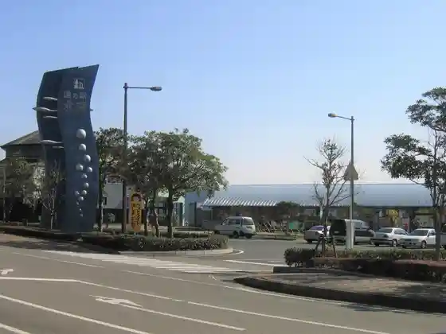
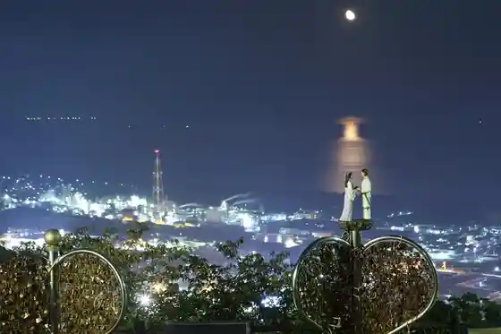
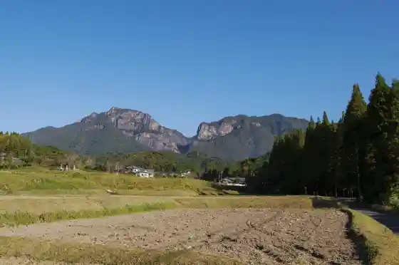
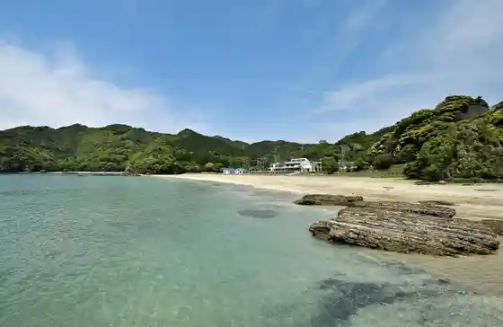

Roadside Station Kitaura
Nobeoka, Miyazaki · 0982-45-3811 · Official / source link

Nobeoka Castle Ruins Shiroyama Park
Nobeoka, Miyazaki · 0982-22-7022 · Official / source link
Atago Yama Lookout
Nobeoka, Miyazaki · 0982-29-2155 · Official / source link

Mukabaki Yama Mukabaki Falls
Nobeoka, Miyazaki · 0982-29-2155 · Official / source link

Sumie Beach
Nobeoka, Miyazaki · 0982-43-0201 · Official / source link

Pakkun Iwa
Nobeoka, Miyazaki · 0982-29-2155 · Official / source link
Asuriitotaun Nobeoka Ariina (Shingu Saki Ken Gym)
Nobeoka, Miyazaki · Official / source link
Okuzure Yama
Nobeoka, Miyazaki · 0982-29-2155 · Official / source link
Saigotakamori Shukujin Ato Museum
Nobeoka, Miyazaki · 0982-46-2960 · Official / source link
Kumano Ko Beach
Nobeoka, Miyazaki · 0982-29-2155 · Official / source link
Kagamiyama
Nobeoka, Miyazaki · 0982-46-5010 · Official / source link
Nobeoka Botanical Garden
Nobeoka, Miyazaki · 0982-39-0977 · Official / source link
Roadside Station Kitagawa Hayuma
Nobeoka, Miyazaki · 0982-24-6006 · Official / source link
Shikagawa Gorge
Nobeoka, Miyazaki · 0982-47-3600 · Official / source link
Shita Aso Beach
Nobeoka, Miyazaki · 0982-45-3811 · Official / source link
Shukuko Kawa Campground
Nobeoka, Miyazaki · 080-5816-6290 · Official / source link
no Beoka waiwai Ariina
Nobeoka, Miyazaki · 0982-32-5832 · Official / source link
Shukuko Kawa Gorge
Nobeoka, Miyazaki · 0982-27-4740 · Official / source link
Roadside Station Hoppo Yotchimiro Ya
Nobeoka, Miyazaki · 0982-48-0808 · Official / source link
Nishi Kai Koen Yakyujo
Nobeoka, Miyazaki · 0982-32-5832 · Official / source link
Shukuko Kawa Onsen
Nobeoka, Miyazaki · 0982-23-3080 · Official / source link
Herusutopia Nobeoka
Nobeoka, Miyazaki · 0982-34-1111 · Official / source link
Hieizan Senjojiki
Nobeoka, Miyazaki · 0982-29-2155 · Official / source link
Kiseki no Seiryu Ogawa
Nobeoka, Miyazaki · 0982-27-4740 · Official / source link
Shimano Urashima
Nobeoka, Miyazaki · 0982-43-0723 · Official / source link
Nobeoka Shiro Naito Kinen Museum
Nobeoka, Miyazaki · 0982-21-7110 · Official / source link
Hamayu Village Umibe no Campground (Soreiyu Ruvan)
Nobeoka, Miyazaki · 0982-45-3811 · Official / source link
Imayama Taishi
Nobeoka, Miyazaki · 0982-32-5290 · Official / source link
Nishi Kai Koen Rikujokyogijo
Nobeoka, Miyazaki · 0982-32-5832 · Official / source link
Sumie Kazokuryoko Village
Nobeoka, Miyazaki · 0982-43-0201 · Official / source link
Hoppo Gorufu Club
Nobeoka, Miyazaki · 0982-38-0006 · Official / source link
ETO Land Soku Nichi no Mine
Nobeoka, Miyazaki · 0982-47-2700 · Official / source link
Asahikasei Nobeoka Tenji Center
Nobeoka, Miyazaki · 0982-22-2070 · Official / source link
Hotaru no Kan
Nobeoka, Miyazaki · 0982-27-4740 · Official / source link
Sumie Kazokuryoko Village (Tenisukoto)
Nobeoka, Miyazaki · 0982-43-0201 · Official / source link
Hoko Gaku
Nobeoka, Miyazaki · 0982-27-6322 · Official / source link
Kitagawa Kannai no Chinkakyo (Sensui Hashi)
Nobeoka, Miyazaki · 0982-27-4740 · Official / source link
Myo Ta Koen Kita Plaza Minami Plaza
Nobeoka, Miyazaki · 0982-21-7093 · Official / source link
Nobeoka Gorufu Club
Nobeoka, Miyazaki · 0982-43-0101 · Official / source link
Kami San Yama
Nobeoka, Miyazaki · 0982-27-4740 · Official / source link
Nishi Kai Koen Teikyu Ba
Nobeoka, Miyazaki · 0982-21-6719 · Official / source link
Nishi Kai Koen Kyugijo
Nobeoka, Miyazaki · 0982-21-6719 · Official / source link
Ieda Marsh
Nobeoka, Miyazaki · 0982-27-4740 · Official / source link
Oni no Me Yama (Sugi)
Nobeoka, Miyazaki · 0982-34-7833 · Official / source link
Shikagawa Campground
Nobeoka, Miyazaki · 0982-48-0864 · Official / source link
Otsumu Shrine
Nobeoka, Miyazaki · 0982-46-5010 · Official / source link